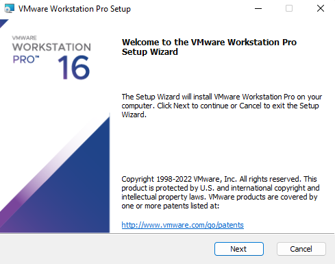
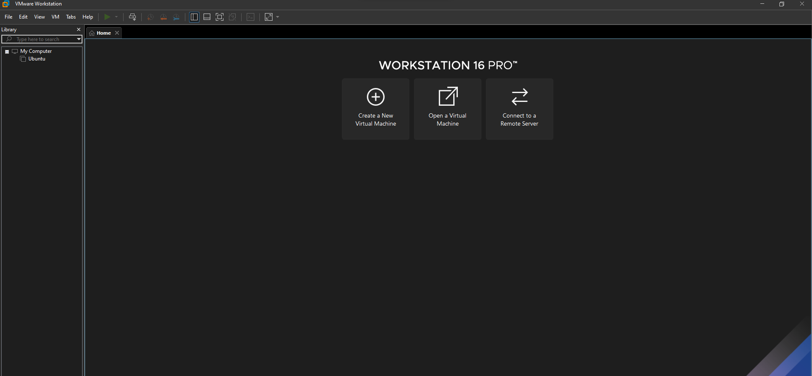

Setting up environment
All Downloads.
First need to download VMWare workstation pro. Click Here or use the link below.
https://download3.vmware.com/software/WKST-1624-WIN/VMware-workstation-full-16.2.4-20089737.exe
We also need to install Linux 20.04. To install it on a virtual machine, we will be using a .iso file. To download the .iso file Click Here
or use the link below.
https://releases.ubuntu.com/20.04/ubuntu-20.04.4-desktop-amd64.iso
Installing VMWare.

Press Next
Agree to terms and click Next.
Select where to install and Next.
Untick both options and click Next.
At least choose Start Menu Program Folder and Desktop is optional if you want a desktop shortcut.
Make sure to click License and not Finish!
Use this Licencse: ZF3R0-FHED2-M80TY-8QYGC-NPKYF and press Enter.
Click Finish.
Congratulations. You have successfully installed VMWare workstation PRO.
Installing Ubuntu.

Press Create a New Virtual Machine.
Select typical and press Next
Make sure to select I will install the operating system later. and click next.
Choose the following options and press Next
Guest Operating System: "Linux"
Version: "Ubuntu"
Give a proper name, and choose where to install. Make sure to choose an empty folder for installation. After that press Next
Make sure to select Store virtual disk as a single file and the required Maximum disk size. For our task 20GB should be enough, but select more if you wish to.
Something like this should be shown. Press Finish.
A new virtual environment should be ready and can be see on the left side. Select it and press Edit virtual machine settings.
Select CD/DVD (SATA) and choose Use ISO image file. After that browse and select the Ubuntu .iso file downloaded before. Press OK after that.
While the virtual machine is selected, click the green Power on this virtual machine
Wait for it to load first. After that select English as the language and press Install Ubuntu.
Again select English for keyboard and continue
After that make sure to select these options and press continue
Select Erase disk and install Ubuntu, and press Install Now. You do not have to worry, if you are installing in an empty folder, nothing to be worried about.
A popup will be shown. Press Continue, if you are installing in a new folder, nothing to worry about.
Select your location, and press Continue
Set credentials and press Continue. You should make sure to remember the credentials. You may use an easy credentials as you will be typing it again and again.
When setup is complete, remove the .iso file from the current location to another location or delete it completely. After that press Restart Now
Press Skip
Press Next
Select No, don't send system info, and press next
Press Next
Press Done
Press Install Now, and wait for it to complete. It will take some time for it to complete. You can see the progress on the left of your screen.
You will be asked to give your password to install necessary updates.
Congratulations! You have successfully installed Linux in your virtual machine.
Next you might wish to install NS3 or SUMO if you have not already done so.